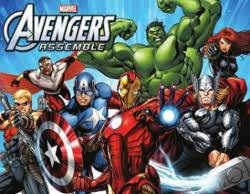

The team debuted in The Avengers #1 (Sept. 1963). Much like the Justice League, the Avengers were an assemblage of superheroes who each had an existing series of his own. All of the characters were created by Stan Lee and Jack Kirby. This initial series, published bi-monthly through issue #6 (July 1964) and monthly thereafter ran through issue #402 (Sept. 1996), with spinoffs including several annuals, miniseries and a giant-size quarterly sister series that ran briefly in the mid-1970s.[2] Writers of the first series included Roy Thomas, Steve Englehart, Gerry Conway, Jim Shooter and David Michelinie. Artists included John Buscema, Tom Palmer, Neal Adams, George Perez, John Byrne and Jim Starlin. Other spinoff series include West Coast Avengers, initially published as a four-issue miniseries in 1984, followed by a 102-issue series (Oct. 1985–Jan. 1994), retitled Avengers West Coast with #47;[3][4] and the 40-issue Solo Avengers (Dec.1987–Jan. 1991), retitled Avengers Spotlight with #21.[5][6] Between 1996 and 2004, Marvel relaunched the primary Avengers title three times. In 1996, the "Heroes Reborn" line took place in an alternate universe, with a revamped history unrelated to mainstream Marvel continuity. The Avengers vol. 3 ran for 84 issues from February 1998 to August 2004. Early issues were written by Kurt Busiek and pencilled by George Perez. To coincide with what would have been the 500th issue of the original series, Marvel changed the numbering, and The Avengers #500–503 (Sept.– Dec. 2004), the one-shot Avengers Finale (Jan. 2005)[7] became the "Avengers Disassembled" storyline and final issues. In January 2005, a new version of the team appeared in the ongoing title The New Avengers,[8] followed by The Mighty Avengers, Avengers: The Initiative, and Dark Avengers. Avengers vol. 4 debuted in July 2010 and ran until January 2013.[9] Vol. 5 was launched in February 2013.[10] After Secret Wars, a new Avengers team debuted, dubbed the All-New, All-Different Avengers, starting with a Free Comic Book Day preview.[11] Following Civil War II, the book was relaunched in 2016 as Avengers, while retaining the same writer and much of the cast from the All-New, All-Different run.[12] The series ran for 11 issues before reverting to the numbering of the original Avengers series with issue #672. Starting with issue #675, all four Avengers titles being published at the time (Avengers, Uncanny Avengers, U.S. Avengers and Occupy Avengers) were merged into a single weekly series dubbed Avengers: No Surrender, lasting 16 issues, designed to close out this era of the team's history.